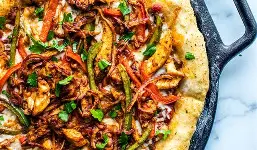
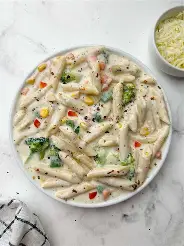

Pizza

Pizza is a dish of Italian origin consisting of a usually round, flat base of leavened wheat-based dough topped with tomatoes, cheese, and often various other ingredients (such as anchovies, mushrooms, onions, olives, vegetables, meat, etc.) which is then baked at a high temperature, traditionally in a wood-fired oven.Pasta

Pasta is a staple food of Italian cuisine, typically made from an unleavened dough of wheat flour mixed with water or eggs, and formed into sheets or various shapes, then cooked by boiling or baking.